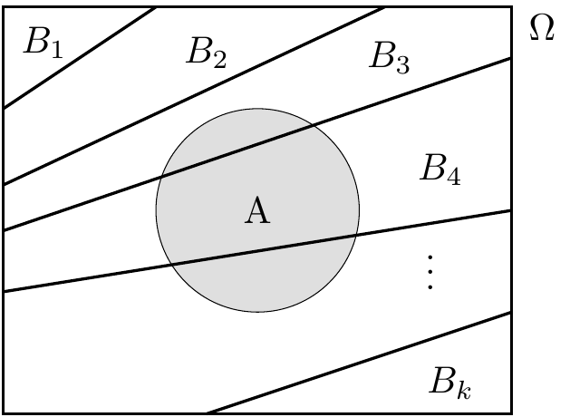
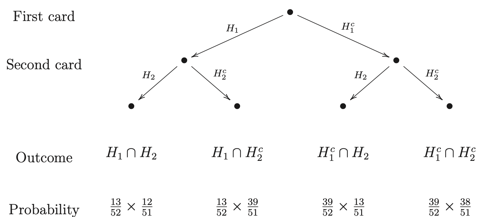

Chapter 3 Conditional Probability and Independence
3.1 Introduction
Sometimes we need to change probabilities in light of additional information.
Example 3.1 Consider data on the height of 89 first year students.
| < 178cm | ≥ 178cm | Total | |
|---|---|---|---|
| Male | 27 | 24 | 51 |
| Female | 33 | 5 | 38 |
| Total | 60 | 29 | 89 |
The probability that an individual is at least 178cm is \(29/89=0.326\).
If we are now told that the individual is:
- Male, then the probability changes to \(24/51=0.471\),
- Female, then the probability changes to \(5/38=0.132\).
Examples of events which might modify probabilities:
| Event 1 | Event 2 |
|---|---|
| A patient has a certain illness | A test is negative |
| A political party wins an election | Opinion poll results |
| Your soccer team win | Play at home |
3.2 Definitions
The conditional probability of event \(A\) occurring given (conditional on) event \(B\) having definitely occurred is defined by: \[ Pr(A|B) = \frac{Pr(A\cap B)}{Pr(B)} \qquad \left[\mbox{provided } Pr(B)>0\right]. \] This is sometimes thought of as the “fourth axiom”.
Example 3.1 continued If \(A=\{\mbox{Height at least 178cm}\}\) and \(B=\{\mbox{Female}\}\), then, as before, \[ Pr(A|B) = \frac{Pr(A\cap B)}{Pr(B)} = \frac{5/89}{38/89} = \frac{5}{38} = 0.132. \]
Notice that here \(Pr(A|B) < Pr(A)\) (recall that \(Pr(A)=29/89=0.326\)), and so we say that event \(B\) is unfavourable for event \(A\).
If we already have the conditional probability of \(A\) given \(B\), and the probability of \(B\), then we can find the probability that both occur together using the multiplication rule which is a rearrangement of the definition of conditional probability \[ Pr(A\cap B) = Pr(A|B)Pr(B). \] In some examples we are interested in the probabilities of intersections, but it is (much) easier to first evaluate conditional probabilities.
If we consider a sequence of \(n\) events, \(A_1, A_2,\ldots , A_n\), then the generalisation is \[ Pr(A_1\cap A_2\cap\ldots \cap A_n) = Pr(A_1)Pr(A_2|A_1)Pr(A_3|A_2\cap A_1) \cdots Pr(A_n| A_{n-1}\cap \cdots \cap A_1 ). \] Typically, these events may be related to successive stages of an experiment.
3.3 Independent events
This is a very important idea in general statistics, not just when considering events as here. For some pairs of events \[ Pr(A|B) >Pr(A) \quad \mbox{and then also} \quad Pr(B|A) >Pr(B) \qquad \begin{array}{l} A \mbox{ is favourable for } B \\ B \mbox{ is favourable for } A \end{array} \] or \[ Pr(A|B) < Pr(A) \quad \mbox{and then also} \quad Pr(B|A) < Pr(B) \qquad \begin{array}{l} A \mbox{ is unfavourable for } B \\ B \mbox{ is unfavourable for } A. \end{array} \] Sometimes, however, we have \[ Pr(A|B) =Pr(A) \quad \mbox{and then also} \quad Pr(B|A) =Pr(B) . \] in this case \(A\) and \(B\) are said to be independent. That is, knowing that one of these events has definitely occurred does not change the likelihood that the other will occur.
Definition: Two events are statistically independent if and only if \[ Pr(A\cap B) =Pr(A)Pr(B). \]
Comments:
- This expression comes from a re-arrangement of the definition of conditional probability. It gives a single, symmetric equation which works even if \(Pr(A)\) or \(Pr(B)\) is zero.
- Do not confuse independence with mutually exclusive! If events are mutually exclusive then \(A\cap B= \emptyset\) and so \(Pr(A\cap B)=0\), whereas for independence \(Pr(A\cap B) = Pr(A)Pr(B)\) which, in general, is not zero (only if \(A=\emptyset\) or \(B=\emptyset\), or both).
- In a practical situation, that is when considering data, we can compare the relative frequencies and look for approximate equality.
- If we know that the events are physically independent, then we can evaluate \(Pr(A\cap B)\) using the product \(Pr(A)Pr(B)\); or we can use this as a test for independence by evaluating \(Pr(A\cap B)\)and \(Pr(A)Pr(B)\) separately and comparing the values.
- Statistical independence concerns only “balance of probabilities” – knowing that \(B\) has occurred does not change the probability of \(A\) occurring. Physical independence, however, is a stronger situation requiring no change in the number of outcomes.
For example, consider the roll of a fair six-sided die. Then, \(\Omega =\{1,2,,,5,\}\). Let \(A=\{2,,6\}\), \(B=\{1,2\}\) and then \(A\cap B = \{2\}\). So, \(Pr(A)=1/2\), \(Pr(B)=13/\) and \(Pr(A\cap B)=1/6\) and hence \(A\) and \(B\) are statistically independent.
Physical independence implies statistical independence, but statistical independence does not imply physical independence. If we use the above as a test, then if the condition holds we can only claim statistical independence, whereas if the condition does not hold then the events are neither statistically nor physically independent.
Comment: Three events \(A\), \(B\) and \(C\), are pairwise independent is and only is \[\begin{align*} Pr(A\cap B) & = Pr(A)Pr(B)\\ Pr(B\cap C) & = Pr(B)Pr(C), \mbox{ and}\\ Pr(A\cap C) & = Pr(A)Pr(C). \end{align*}\] They are (completely) independent if and only if they are pairwise independent and \[ Pr(A\cap B \cap C) = Pr(A)Pr(B)Pr(C). \]
Now complete Worksheet 5 on conditional probability and independence to check your understanding.
3.4 Theorem of total probability and Bayes’ theorem
Total probability formula
Suppose that we are interested in the probability of some event \(A\), but that it is not easy to evaluate \(Pr(A)\) directly.
Also, suppose that there are a set of events \(B_1, B_2,\ldots, B_k\) which partition the sample space, and that we can easily find \(Pr(A|B_1), \ldots, Pr(A|B_k)\) and \(Pr(B_1), \ldots, Pr(B_k)\).
Then, we can evaluate the probability of \(A\) as \[\begin{align*} Pr(A) & = Pr(A|B_1)Pr(B_1) + Pr(A|B_2)Pr(B_2) + \cdots + Pr(A|B_k)Pr(B_k)\\ & = \sum _{j=1}^k Pr(A|B_j)Pr(B_j). \end{align*}\]
For \(B_1, \ldots, B_k\) to be a partition of \(\Omega\), these events must be: (i) mutually exclusive (disjoint sets), that is \(B_i\cap B_j=\emptyset (i\ne j)\) and (ii) exhaustive for \(\Omega\), that is \(B_1\cup B_2\cup\cdots\cup B_k=\Omega\).

Example 3.3 Suppose a bag contains 3 red balls and 5 green balls. We remove two balls, what is the probability that the second ball is red?
Let \(A=\{\mbox{Second ball is red}\}\) and \(B_1=\{\mbox{First ball is red}\}\), \(B_2=\{\mbox{First ball is green}\}\). Now, \(Pr(B_1)= 3/8\) and \(Pr(B_2)=5/8\), but also \(Pr(A|B_1)=2/7\) and \(Pr(A|B_2)=3/7\).
Hence
\[
Pr(A) = Pr(A|B_1)Pr(B_1) +Pr(A|B_2)Pr(B_2)
= \frac27\times \frac38 + \frac37 \times \frac58 = \frac38.
\]
Note that
\(Pr(\mbox{First ball is red}) = Pr(\mbox{Second ball is red})\).
Bayes’ rule
Suppose we have a conditional probability, such as \(Pr(A|B)\), but we are interested in the probability of the events conditioned the other way, that is \(Pr(B|A)\), then \[ Pr(B|A) = \frac{Pr(A|B)Pr(B)}{Pr(A)} \qquad \mbox{when } Pr(A)>0. \]
In general, let \(B_1, B_2, \ldots, B_k\) be a partition of \(\Omega\) (as before), then \[ Pr(B_i|A) = \frac{Pr(A|B_i)Pr(B_i)}{Pr(A)}, \qquad i=1,2,\ldots, k. \] Notice that \(Pr(A)\) can be evaluated using the previous total probability formula, so that \[ Pr(B_i|A) = \frac{Pr(A|B_i)Pr(B_i)}{\sum_{j=1}^k Pr(A|B_j)Pr(B_j)}, \qquad i=1,2,\ldots, k. \]
Example 3.4 Suppose that a computer spam filter is 90% effective at flagging spam emails, but will also incorrectly flag 5% of safe emails. Suppose that 1 in 100 emails are spam.
Let \(S=\{\mbox{Email is spam}\}\) and \(F=\{\mbox{Flagged as spam}\}\), then \(Pr(F|S)=0.90\), \(Pr(F|S^c)=0.05\) and \(Pr(S)=0.01\).
What is the probability that a new email is flagged as spam? \[ Pr(F) \hspace{-1mm} =Pr(F | S)Pr(S)+Pr(F|S^c)Pr(S^c) = 0.90\times 0.01 + 0.05\times 0.99 = 0.0584. \] Further, suppose that an email is flagged, then what is the probability that it is a spam email? \[ Pr(S|F) = \frac{Pr(F|S)Pr(S)}{Pr(F)} = \frac{0.90\times 0.01}{0.0584} = 0.1538. \] Note that the probability of an unflagged email being spam is \[Pr(S|F^c) = \frac{Pr(F^c|S)Pr(S)}{Pr(F^c)} = \frac{(1-Pr(F|S))Pr(S)}{1-Pr(F)} = \frac{0.1\times 0.01}{0.9406} = 0.0011. \]Example 3.5 Suppose a fair die is rolled twice.
- Let \(A\) denote the event that the sum is 9, and \(B\) denote the event that the second toss is an even value.
Now \(A=\{(3,6, (4,5), (5,4), (6,3)\}\) and hence \(Pr(A)=4/36\), \(Pr(B)=1/2\), and \(Pr(A\cap B)=2/36\) since \(A\cap B = \{(3,6), (5,4)\}\).
Then here \(Pr(A)Pr(B) = (4/36)\times (1/2) = 2/36 = Pr(A\cap B)\) hence \(A\) and \(B\) are statistically independent.
- Let \(C\) denote the event that both are odd, and \(D\) that their sum is 8.
We have \(Pr(C) = 9/36\), \(Pr(D)=5/36\) and \(Pr(C\cap D)=2/36\).
So, since \(Pr(C)Pr(D) = (9/36)\times (5/36) = 5/144 \ne 2/36= Pr(C\cap D)\) then \(C\) and \(D\) are not independent.Example 3.6 Consider the occurrence of colour blindness (CB) which is carried by the X-chromosome.
About 10% of X chromosomes are faulty and so males (who have one X chromosome) have a probability of \(0.1\) of being colour blind. Whereas females (with two X chromosomes) need two faulty chromosomes and so have a \((0.1)^2\) chance of being colour blind. In the UK population about 52% are male and 48% female.
So the overall probability of selecting a colour blind person is\[-8mm] \[\begin{align*} Pr(CB) & = Pr(CB|Male)Pr(Male) +Pr(CB|Female)Pr(Female) \\ & = 0.1 \times 0.52 +(0.1)^2 \times 0.48 = 0.0568. \end{align*}\]
Note that \(\{Male\}\) and \(\{Female\}\) are events which partition the sample space, and that \(\{colour-blind\}\) is some other event.
Now suppose we have selected a person at random who is definitely colour blind. What can we say about the chances that they are Male or Female?
\[\begin{align*} Pr(Male|CB) \frac{Pr(CB|Male)Pr(Male)}{Pr(CB)} = \frac{0.1\times 0.52}{0.0568} = 0.915 \end{align*}\] and \[\begin{align*} Pr(Female|CB) \frac{Pr(CB|Female)Pr(Female)}{Pr(CB)} = \frac{(0.1)^2\times 0.48}{0.0568} = 0.085. \end{align*}\]
So the colour blind person is 10 times more likely to be Male than Female.
Note that, of course \(Pr(Male|CB)+Pr(Female|CB)=1\) as the events \(\{Male\}\) and \(\{Female\}\) are complementary.Example 3.7 Suppose that two cards are chosen at random from a standard pack of 52 playing cards.
Let \(H_1\) and \(H_2\) denote the events that a heart is selected on the first and second choice respectively.
Now clearly, for the first selection we have, \[ Pr(H_1) = 13/52 \qquad\text{and}\qquad Pr(H_1^c) = 39/52 \] and for the second selection (given the first) \ \[ Pr(H_2|H_1) = 12/51 \qquad\text{and}\qquad Pr(H_2|H_1^c) = 13/51 \] \[ Pr(H_2^c|H_1) = 39/51 \qquad\text{and}\qquad Pr(H_2^c|H_1^c) = 38/51.\]
Suppose we require \(Pr(\mbox{both are hearts})\) that is \(Pr(H_2 \cap H_1)\), then \[ Pr(H_2 \cap H_1) = Pr(H_2|H_1)Pr(H_1) = \frac{12}{51}\times \frac{13}{52} = \frac{1}{17}. \]
This type of approach can be illustrated using a tree diagram.

It is useful to check that these probabilities sum to 1. ```